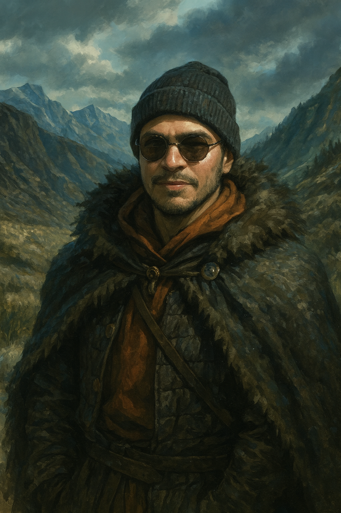

Bienvenidos a Westeros
Elegi esta serie porque la vi completa y me gustó la trama y el estilo visual.
Imagen personal camuflada
Esta es una imagen personal camuflada al estilo de Game of Thrones.
Sobre la serie
Juego de Tronos narra las sangrientas luchas de varias familias nobles por el poder del Trono de Hierro en los Siete Reinos de Poniente, mientras una antigua amenaza, los Caminantes Blancos, resurge al norte del Muro. La trama sigue a las principales Casas, como los Stark y los Lannister, en sus intrigas políticas y guerras, que ponen en riesgo el destino de los reinos.
Sitios sobre Game of Thrones
Contacto para Fans
Dejanos tu comentario o suscribite para novedades de la serie.